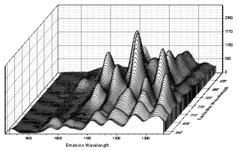
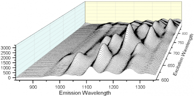

Das Origin Wasserfalldiagramm zeichnet eine oder mehrere Y-Spalten oder einen Bereich einer oder mehrerer Y-Spalten als eine Reihe von Liniendiagrammen, die in die Seite "zurückweichen". Solche Diagramme sind nützlich, um Datensätze zu vergleichen, die unter Bedingungen gesammelt wurde, bei denen schrittweise einige Parameter verändert wurden. Origin unterstützt sowohl 2D- als auch 3D-Wasserfalldiagramme:
 |
 |
| GDI-basiertes 2D-Wasserfalldiagramm | OpenGL-basiertes 3D-Wasserfalldiagramm |
|---|
Es gibt zwei Verfahren, Wasserfalldiagramme grafisch anzupassen:
Der Bearbeitungsmodus des ersten Klicks (quadratische Angriffspunkte) erlaubt Ihnen, die Position des Layers auf der Seite, die Größe des Layers und den Ansichtswinkel zu verändern. Wenn der Cursor ein Pfeil mit zwei Spitzen ist, dann ist der Ursprung des Diagramms fixiert. Sie können aber die Dimensionen des Layers und den internen Winkel, der das Eingabefeld um das Wasserfalldiagramm definiert, verändern. Wenn der Cursor ein Pfeil mit vier Spitzen ist, können Sie den Layer auf der Seite verschieben.
Der Bearbeitungsmodus des zweiten Klicks (dreieckige Angriffspunkte) ermöglicht es Ihnen, einen der dreieckigen Angriffspunkt zu ziehen, um den Ansichtswinkel zu verzerren, ohne die Länge oder die Position der X-Achse zu verändern (Beachten Sie, dass Sie den Layer verschieben, falls Sie mit dem Cursor den Angriffspunkt nicht genau treffen). Eine Diagrammverzerrung kann auch dadurch erreicht werden, dass die Felder X-Verschiebung und Y-Verschiebung auf der Registerkarte Wasserfall des Dialogs Details Zeichnung (Format: Layer) bearbeitet werden.
Das 3D-Wasserfalldiagramm ist ein spezieller Typ des 3D-Wanddiagramms mit einer Wandbreite von 0. Sie können das Diagramm wie andere 3D-Diagramme auch drehen, in der Größe verändern, strecken und schief anzeigen.
Die Linien im Diagramm können sowohl für 2D- und 3D-Wasserfalldiagramme entlang der Y- oder Z-Richtung farbkodiert werden. Um ein farbkodiertes Wasserfalldiagramm zu erstellen, lesen Sie bitte 2D-Wasserfall: Y-Farbabbildung, 2D-Wasserfall: Z-Farbabbildung, 3D-Wasserfall: Y-Farbabbildung und 3D-Wasserfall: Z-Farbabbildung.
Sobald Sie das farbkodierte Wasserfalldiagramm erstellt haben, können Sie die Abbildungsebenen und -farben benutzerdefiniert anpassen. Sie können die Anzahl der Ebenen, die Farbe jeder Ebene, das Design der Farbabbildung etc. festlegen. Obwohl die Einstellungen der Farbbildung die gleichen sind, ist die Y-Farbabbildung für Y-Werte und Z-Farbabbildung für Z-Werte. Erstere kann die Farbe für verschiedene Y-Werte verändern, während letztere die Farbe für verschiedene Z-Werte beeinflussen kann.
Weitere Einzelheiten zum Festlegen der Farbabbildung in Wasserfalldiagrammen finden Sie auf dieser Seite.
Symbole können in 3D-Wasserfalldiagrammen zu jeder Linie hinzugefügt zu werden. Um ein 3D-Wasserfall mit Linie + Punkt zu erstellen, bearbeiten Sie bitte die Symboleigenschaften auf der Registerkarte Symbol im Dialog Diagrammeigenschaften des 3D-Wasserfalldiagramms. Sie sollten die Symbolgröße auf nicht null setzen (Standardgröße ist null), dann Symboltyp und -farbe festlegen und auf Anwenden klicken, um die Einstellungen anzuwenden.
Um einen Linienverbindungstyp (Gerade, Spline, Bezier, Akima etc.) festzulegen, klicken Sie auf Format: Zeichnung und wählen Sie auf der Registerkarte Muster die Option in der Auswahlliste Verbinden.
Die Verschiebung der Linien kann durch Werte in einer Beschriftungszeile eines Arbeitsblatts, einschließlich Langname, Kommentare, Einheiten, Abtastintervall und Parameter, deren Werte nur numerisch sind, für 2D- und 3D-Wasserfalldiagramme festgelegt werden. Wählen Sie eine Beschriftungszeile aus der Auswahlliste Quelle des Z-Werts, um die Quellzeile des Z-Werts im Arbeitsblatt festzulegen. Für 2D-Wasserfalldiagramme befindet sich diese Auswahlliste auf der Registerkarte Wasserfall im Dialog Details Zeichnung; für 3D-Wasserfalldiagramme befindet sich diese Auswahlliste auf der Registerkarte Allgemeines im Dialog Details Zeichnung.
Sie können die Zeichenreihenfolge umkehren, so dass das Wasserfalldiagramm von hinten nach vorne gezeichnet wird:
Für 2D-Wasserfalldiagramme gibt es ein Kontrollkästchen Verborgene Linien zeigen auf der Registerkarte Wasserfall des Dialogs Details Zeichnung, das verwendet wird, um festzulegen, ob verborgene Linien, die durch Zeichnungen im Vordergrund verdeckt werden, gezeigt werden oder nicht.
Für 3D-Wasserfalldiagramme können Sie auf der Registerkarte Muster des Dialogs Details Zeichnung die Transparenz der Füllfläche festlegen oder die Füllfarbe auf Kein setzen, um die verborgenen Linien zu zeigen.